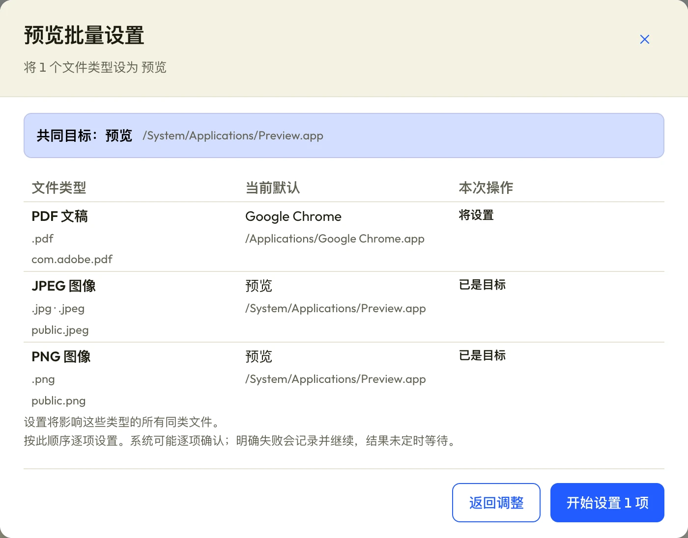

按你的习惯，
找到默认应用。
应用、文件类型或协议，任选一个入口。

默认应用的改动，
范围与结果都清楚。
修改范围、应用副本、处理结果，分别说清楚。
- 看清修改范围
- 设置影响这个类型的所有同类文件。拖入文件，也会先识别类型。
- 认准这一份应用
- 同名或同标识的应用，按实际安装路径区分。
- 成功，要有依据
- 系统确认并回读匹配，才记为成功；结果未定会单独保留。
文件拖入、安装
与更新问题。
拖入文件，会改动文件内容吗？
不会。拖入用于识别文件类型，识别时不保存文件路径。之后的设置会改变这一类型所有同类文件的默认打开应用。
设置中途退出会怎样？
退出不会撤回已经发出的系统请求。重开后可以查看记录，未执行项需要再次预览、确认后继续。
首次打开被 macOS 拦截？
当前安装包未经 Apple 公证。确认安装包来自本项目后，请按项目的安装说明处理。
之后如何更新？
正式版启动后会检查 GitHub Releases。也可以在应用顶栏打开“软件更新”，查看说明、下载并确认重启安装。
安装要求
- 处理器
- Apple Silicon
- 构建下限
- macOS 13
- 安装位置
- 应用程序文件夹
已在 Apple Silicon 环境验证，尚未验证全部 macOS 13+ 系统或 Intel 设备。
阅读完整安装说明